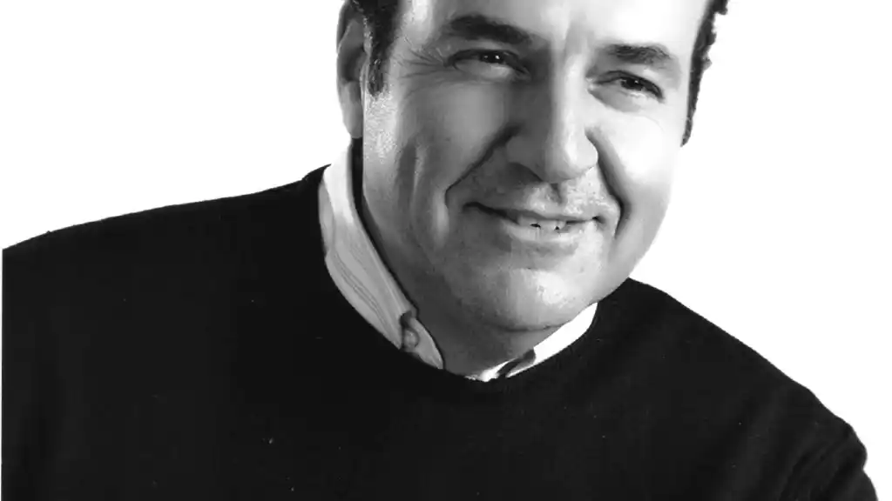

Sinopsis
Una novela de pícaros de medio pelo, de oportunistas ingenuos y de sinsustancias muy espabilados en la que nada es lo que parece, excepto algunas cosas.
Cristóbal Orihuela, político de cuarta en horas bajas, recibe la noticia del fallecimiento de su tío Genaro en pleno comité federal de su partido tras una debacle electoral. Obligado a regresar a su pueblo para asistir al sepelio, se hace acompañar de su mano derecha, Benito Germán Göering del Pozo.
En el velatorio, Cristóbal repara en la carátula de una cinta de vídeo perteneciente a una colección de la historia de España en la que su tío camuflaba su afición a las pelis porno. Al reintegrar el estuche comprueba que hay otras cuatro fuera de lugar, y que sus títulos concatenados parecen enviarle un mensaje: en el melonar que le ha legado Genaro hay un tesoro escondido.
¿Permitirán La Funesta, su particular prima de riesgo, y otros lugareños ávidos de saldar cuentas pendientes que la aventura de nuestro héroe tenga un final feliz?
Cerca de seis mil frases hechas ya consolidadas en nuestro idioma componen este relato humorístico (de ahí el título), que se acompañan de fuerzas afines, ubicuas e insoslayables hoy en día: eslóganes publicitarios imperecederos, sentencias del séptimo arte, citas literarias, estribillos pegadizos, latinajos infalibles, lugares comunes y máximas recalcitrantes.
Biografía

GONZALO PITA (Vilagarcía de Arousa, 1963) ha sido guionista bajo seudónimo en TV y cine desde 1997, y antes, durante y después, socio de productora audiovisual, iluminador de garitos en El Foro, profesor del Inem, voluntario de largo recorrido en Calcuta, becario explotado en agencia publicitaria, miembro de un consejo ...